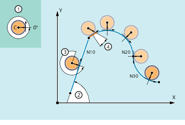

Using the "Tangential control" coupling function, a rotary axis is coupled as following axis to two geometry axes as leading axes, so that the alignment of the following axis is a function of the path tangent of the leading axes.
If the contour described by the leading axes has a discontinuous block transition or corner, then one of the following corner behaviors can be selected:
The dynamic response of the rotary axis has no effect on the leading axes.
The dynamic response of the rotary axis is considered in the path planning of the leading axes together with programmable parameters "rounding clearance" and "angular tolerance".
The leading axes are stopped before the corner, and in an automatically generated intermediate block, the following axis is realigned.
The corner angle is detected depending on the value of machine data MD37400 $MA_EPS_TLIFT_TANG_STEP (tangential angle for corner detection).
The following figure illustrates the mode of operation of the tangential control:
① | Initial position and positive direction of rotation of the following/rotary axes C |
② | Angle of the path tangent in machining plane X/Y |
③ | Offset angle = 270° or -90° The rotary axis is tracked with a programmable offset angle of 270° with respect to the path tangent. |
④ | Rounding clearance and present angular deviation At the block transition from N10 to N20, the contour has a discontinuous transition or corner. As a result of a dynamic response that is too low, the following axis cannot follow the path tangent over part of the path (orange). However, the dynamic response of the following axis is sufficient so that it can precisely follow circular blocks N20 and N30 further along the contour. |
Typical applications of tangential control are:
Tangential positioning a rotatable tool during nibbling
Tracking the workpiece alignment for a belt saw
Positioning of a dressing tool on a grinding wheel
Positioning of a cutting wheel for glass or paper working
Tangential feed of a wire for 5-axis welding
The tangential coupling can be defined, activated, deactivated and deleted in the NC program: